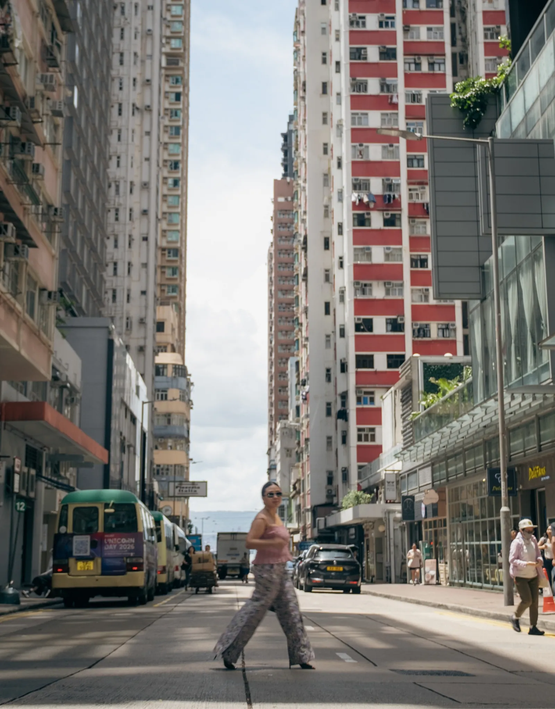
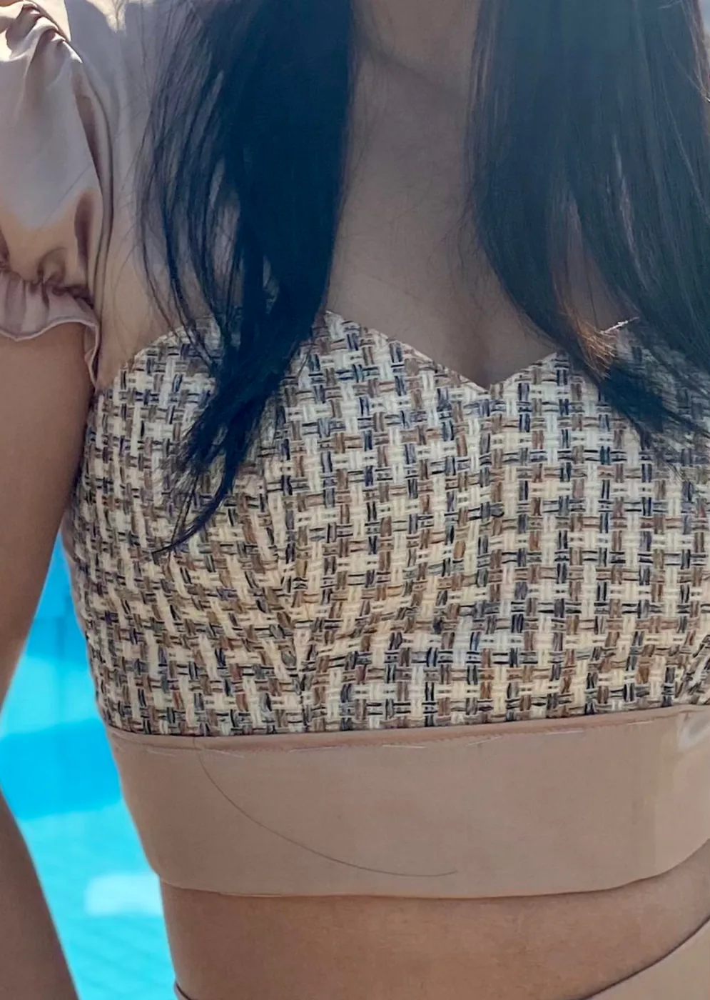

The URIAH Point of View
One day, five moods. Follow the light from the first street of the morning to the last warm room of the evening.



I · Morning
The URIAH Point of View
One day, five moods. Follow the light from the first street of the morning to the last warm room of the evening.
The Signature Look
A black blouse, cut loose through the sleeve, over lilac floral wide-leg trousers. Our most-asked-about look, shown from every side.


Five moods

09Coffee, then onwards
Fabric & Craft
We begin with how a piece feels against the skin, then how it falls when you move. The details here are where that thinking lives.




Selected Frames
A few pieces we keep returning to. The full collection waits at the end.


The end of the day
Until
tomorrow.